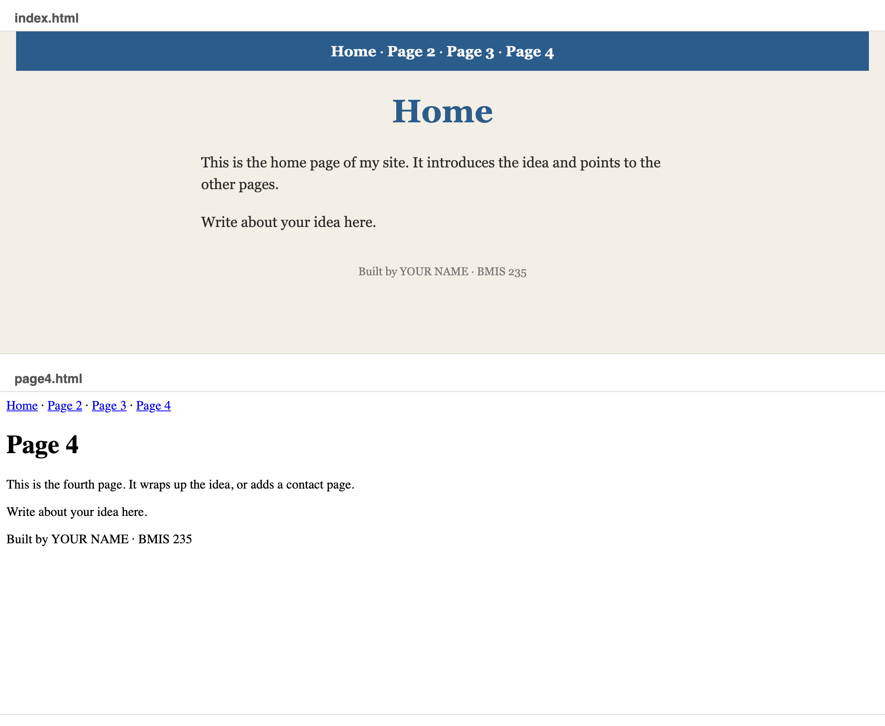
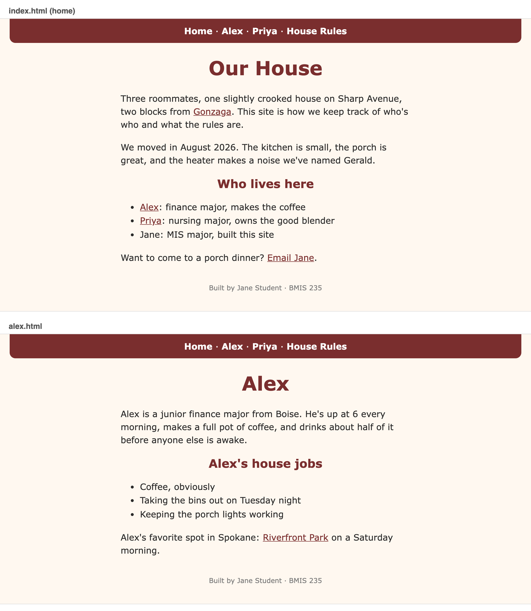

HTML-3
Links + CSS: Your Own Site
Build your first multi-page site on your own idea. The pages link to each other, and one stylesheet controls all of them.
Get this assignment
- Click the button, then Create a new repository.
Button shows a 404? This assignment hasn't been released yet.
- Repository name:
bmis235-html-3(exactly this). Set it to Public. - In your new repo, go to Settings → Pages. Under Build and deployment, choose Deploy from a branch, pick main and / (root), then click Save.
- After 1–2 minutes, open
https://YOUR-GITHUB-USERNAME.github.io/bmis235-html-3/. You'll see a four-page site with a blue menu.
Starter files in your repo: index.html, page2.html, page3.html, page4.html, styles.css, README.md
Seeing a 404 on your live link? Wait up to 5 minutes. Settings → Pages says Your site is live when it's ready.
Before and After


Explore first
- Open your live site and click every menu link.
- One page looks different from the other three. Which one, and how?
- Open that page's code and another page's code. Compare the
<head>sections line by line. What's missing?
That missing line is your first fix. The rest of the assignment is turning the template into your own site.
Three ways to add CSS
- External: one
.cssfile that every page links to. Change it once, every page changes. That'sstyles.csshere. - Internal: a
<style>block at the top of one page. Overrides the external file for that page. You used this in HTML-1 and HTML-2. - Inline: a
style="..."on one tag. Overrides both.
The one line that connects a page to the external file:
<link rel="stylesheet" href="styles.css">Plan your site
Pick an idea with four natural parts. One page per roommate. One page per player on a team. A home page plus three products. A trip with three stops.
Write the four page names on paper first, and the file name for each one (lowercase, no spaces, ending in .html). Then build. Deciding before you type is the habit that saves the most time in this whole module.
What to do
- Fix
page4.htmlso it usesstyles.csslike the other pages.1 pt - Turn the template into your own idea: menu labels, headings and real content on all four pages.3 pts
- Rename at least one page file (for example
page2.html→alex.html) and update the menu on all four pages so every link still works.2 pts - Add one link to an outside website and one email link (
mailto:).1 pt - Add 3 new styles to
styles.css. Commit each one separately with a message that says what it does. List them in Canvas.2 pts - Submit a working GitHub Pages link.1 pt
Steps
- Do Explore first above, then fix
page4.html. Commit. - Plan your four pages on paper.
- Change the menu labels, headings and content on all four pages. Commit after each page.
- Rename a page file, then fix its link in the menu on all four pages. Check every menu link live. Commit.
- Add an outside link and an email link somewhere that makes sense. Commit.
- Add 3 new styles to
styles.css, one commit each.
Hints
- Renaming a file: open it, click the pencil, and change the name in the box above the code. Commit. The file is renamed, but every link that pointed to the old name is now broken until you fix it.
- A menu link must match the file name exactly.
href="alex.html"only works if the file is calledalex.html, notAlex.html. - Email link:
<a href="mailto:you@zagmail.gonzaga.edu">Email me</a> - Outside link:
<a href="https://www.gonzaga.edu">Gonzaga</a>. Include thehttps://. - Style ideas: a different font, link hover colors, a new background color, heading sizes, spacing around paragraphs, rounded corners on the menu. W3Schools CSS has examples for each.
- Your live link shows a 404? A folder only loads if it has a file called
index.html. Keep that name for your home page.
Make it yours
- Fill in the author comment at the top of every file with your name and GU username.
- Fill in
<meta name="author">with your name. - Fill in the footer: Built by YOUR NAME · BMIS 235.
- Make at least 3 commits with clear messages (not "Update index.html").
- Your idea, your page names, your three styles. Your commit messages are how we see what you added.
When you're stuck
- Say it in one sentence: "I expected ___, but I see ___."
- Pick one problem. Ignore the rest for now.
- Find the line. Which tag or file is it in?
- Search your one sentence (W3Schools, Google, YouTube).
- Change one thing, commit, check. Didn't work? Undo it and try the next idea.
"Nothing works" can't be searched. "My image shows a broken icon" can.
Submit
- Wait 1–2 minutes after your last commit.
- Open your live link and click every menu link on every page:
https://YOUR-GITHUB-USERNAME.github.io/bmis235-html-3/ - Paste that link into Canvas. In the Canvas text box, list the 3 styles you added.
Rubric
| Criteria | Pts |
|---|---|
| page4.html uses styles.css | 1 |
| Your own idea on all 4 pages (menu labels, headings, content) | 3 |
| At least one file renamed, menu works on all 4 pages | 2 |
| One outside link and one email link | 1 |
| 3 new styles, each its own commit (listed in Canvas) | 2 |
| Working GitHub Pages link | 1 |
| Total | 10 |